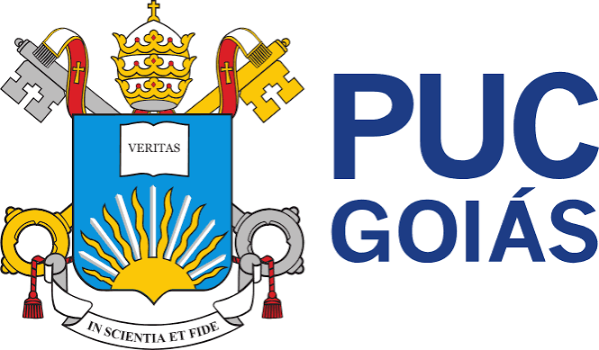

Conheça algumas das principais instituições de ensino superior presentes no estado de Goiás.
Nesta página são apresentadas informações sobre a Universidade Estadual de Goiás, a Universidade Federal de Goiás e a PUC Goiás.

A Universidade Estadual de Goiás é uma instituição pública de ensino superior presente em diferentes municípios do estado.
Acesse o site da UEG
A Universidade Federal de Goiás é uma instituição pública de ensino superior com atuação em diferentes áreas do conhecimento.
Acesse o site da UFG
A PUC Goiás é uma instituição privada de ensino superior localizada em Goiânia, oferecendo cursos em diversas áreas.
Acesse o site da PUC Goiás| Universidade | Curso | Cidade | Modalidade | Duração |
|---|---|---|---|---|
| UEG | Sistemas de Informação | Itaberaí | Presencial | 4 anos |
| Administração | Anápolis | Presencial | 4 anos | |
| UFG | Ciência da Computação | Itaberaí | Presencial | 4 anos |
| Engenharia Ambiental | Goiânia | Presencial | 5 anos | |
| PUC Goiás | Engenharia de Software | Goiânia | Presencial | 4 anos | Total de cursos apresentados | 5 |